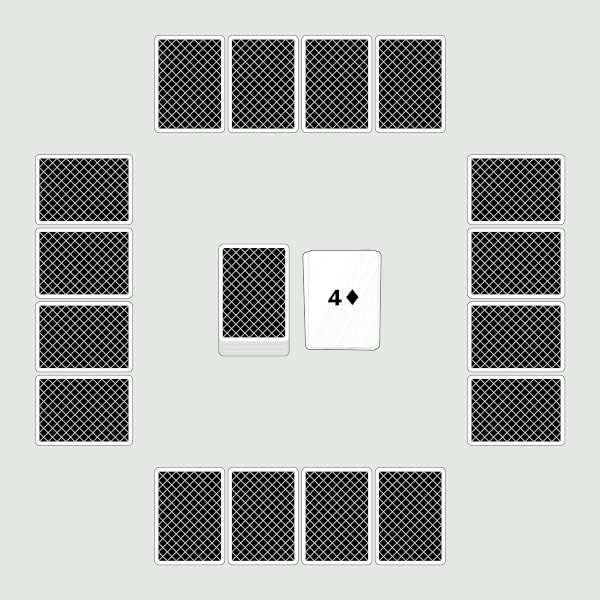
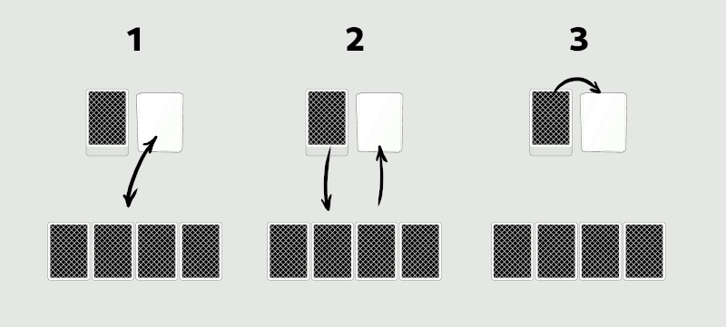
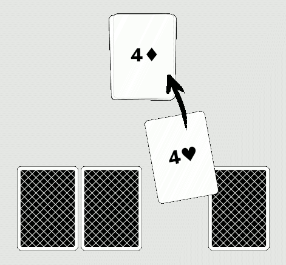

dutch
Dutch is a game where two or more players try to get the least points by swapping cards, without looking at them. It is one of many variant of Golf, though I don't know where this particular version comes from, or why it is called that way.
How to play
Goal
Players take turn swapping their cards in order to reduce their overall score. Cards have the following values:
- K, Q, J, 10: 10 points
- A to 9: 1 to 9 points (except 8)
- 8: 0 points
The player with the least points at the end of the game wins.
Setup

The game uses a standard deck of 52 cards. Shuffle the deck and deal each player four cards. Players can only look at two of their cards, before placing them all face-down in front of them.
Place one card on the table face-up to start a discard pile. Set the rest of the deck beside it.
Player turn

Players take turn doing one of three things:
- Swap one of their card with the one at the top of the discard pile (1)
or look at the top card of the deck, and either:
- Swap one of their card with it, discarding their old card (2)
- Discard it (3)
Special cards
Queens and Jacks allow the player to take a special action when discarded:
- Q: look at one of the face down card (without showing it to the other players)
- J: swap two face down cards (without looking at them)
These apply to any face down card on the table, yours or the other players'.
Banishing a card

At the end of a player's turn, and before the next player have touched either the deck or the discard pile, anyone can discard one or more cards if they match the one at the top of the discard pile (in value).
However, if a player makes a mistake (ie. the cards don't match), they must take their card back, and pick one more from the deck without looking at it.
End of the game
The games ends when the deck runs out, or when one player calls "dutch" at the end of their turn. The remaining players then take one last turn before everyone reveal their cards and count their points.
Resources
- The Wikipedia page for the original game of Golf
- A 2017 Facebook page describing the game (which the authors call "French Dutch")
- A Youtube video explaining the rules
Three commercial versions of this game also exists: